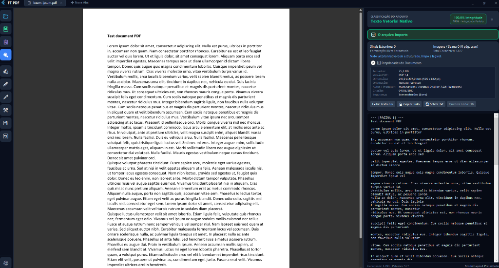
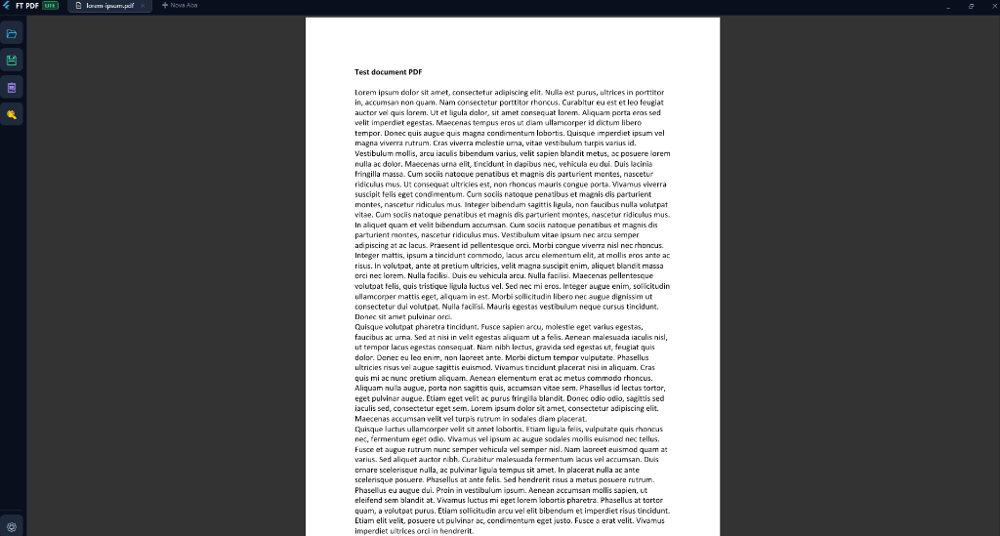

Leitor de PDF veloz com verificação de integridade de documentos.
Abra seus arquivos instantaneamente com renderização vetorial nítida e diagnostique a integridade estrutural de qualquer PDF antes de compartilhar, assinar ou arquivar.

Apenas o que importa para leitura e validação
Sem menus inchados, sem travamentos e sem recursos desnecessários que deixam a experiência lenta.
Leitura Vetorial Instantânea
Abertura rápida de arquivos volumosos com renderização de alta nitidez para monitores Full HD, 2K e 4K.
Verificação de Integridade
Analisa em tempo real se o arquivo PDF está íntegro, corrompido, danificado ou com tabelas de objetos ausentes.
Privacidade Total e Local
Seus documentos são processados 100% na sua máquina. Nenhum arquivo é transferido para servidores externos.
Pronto para Usar
Executável independente e autocontido. Não exige instalações complementares para funcionar no Windows.
Como funciona a verificação de integridade?
Evite erros ao enviar documentos importantes ou contratos com arquivos silenciosamente corrompidos.
Leitura da Estrutura Binária
Checagem do cabeçalho de versão, marcador EOF (End-of-File) e integridade dos bytes do arquivo.
Validação da Tabela XREF
Auditoria dos ponteiros de cada página, imagem e elemento de texto para garantir que nada esteja corrompido.
Relatório Imediato
Confirmação visual instantânea de integridade na barra do aplicativo com indicação clara do estado do documento.
Escolha a opção ideal para você
Duas alternativas gratuitas e 100% locais para leitura e verificação de integridade no Windows.
FT PDF (Normal)
Leitor vetorial completo com diagnóstico detalhado de integridade de documentos, navegação fluida e renderização de alta precisão.

FT PDF Lite
Edição ultraleve desenvolvida para inicialização instantânea, baixíssimo consumo de memória e verificação ágil de integridade.
✓ Compatível com Windows 10 e Windows 11 (64-bit) • 100% Gratuito e Local